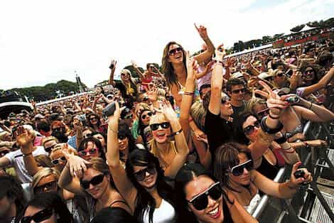

When it comes to U.S cities that offer favorable conditions for single heterosexual men, most would agree it’s slim pickings. It’s no surprise that so many men have grown disenchanted with the American dating market and therefore are looking elsewhere, such as eastern Europe and Asia. Austin, while not perfect, does have a lot of upside for men who are willing to put the work in.
I have spent a total of four years in the trenches and while I have certainly encountered my fair share of knocks on the way, all-in-all it’s been a fruitful experience. Here are four reasons why Austin should be on everyone’s radar, particularly if you’re in the pump and dump business.
1. The Women
Austin earns decent marks in this department. While nines and tens are not as abundant as other major U.S cities such as Miami or New York, you should have little trouble running into myriads of single women that fall within the seven to eight category range. This is because the University of Texas, located in the heart of Austin, is responsible for producing an almost endless supply of young-attractive coeds. Health and fitness is also trendy—which helps keep the obesity rates at bay.
Women for the most part are friendly and have an approachable aura, making day and night game quite lucrative (assuming you have an adequate level of game). Austin is a city full of transplants, which means most people you will encounter are new to town or have only been living in the city for the last two to three years. This eliminates many of the social-clique-barriers you would normally be forced to contend with and considerably reduces the propensity for women to be bitchy and dismissive when cold-approached. The result is a refreshingly pleasant and productive gaming experience.
Dating apps are ubiquitous and therefore offers another viable resource for meeting and attracting women. I personally only use them sparingly during times when I am bored or need to supplement the pipeline. Between the University that acts as feeder system, the booming job market which draws in young post-college-graduate floozies, and the amicable nature of most women, Austin is an environment that even a novice seducer should find relative success, while the more advance players have the potential to inflict some serious damage.
2. The Music Capital Of The World

Austin has the unique distinction of being dubbed the “Music Capital of The World”. This slogan originated when it was discovered Austin had the most live music venues per capita than any other city in the nation.
While this label may be an exaggeration, Austin does have over 250 live music venues and close to 1,900 bands/performing acts that play a wide variety of diverse genres of music. There is live music available for consumption everyday of the week and best of all, many of the shows are free or under twenty dollars. This provides an inexpensive and unique date option for women who are opposed to meeting up at bars or lounges (my preferred choice).
Two of the most renowned festivals in the world are located here. South by Southwest (SXSW) and Austin City Limits (ACL). Both of these events fill the city up with swarms of loose women from all four corners of the world. The majority of them stay in hotels and Airbnb’s that are within close proximity to the venue(s) which can result in some easy same day romps.
During my first SXSW, almost four years ago, I managed to rack up three notches in the span of six days. It is worth noting my game was mediocre at the time but that glorious week served to be the catalyst for my future successes.
I was initially not the biggest fan of live music, concerts, and festivals but this happens to be one of the major keystones that provide the city with its unique charm. With time and the fact that I discovered it to be an effective medium to meet women, I gradually came around to it. If music is one of your pastimes or you’re a starving artist look no further.
3. Outdoor Culture
With an average of 228 sunny days of the year, mild winter weather, outdoor marketplaces, seven lakes and a plethora of parks/trails, Austin is a perfect destination for the outdoorsy person. Zilker park, the jewel in the crown, is a 351 acre plot of land that is dedicated for running, jogging, biking, swimming, and kayaking.
Lake Travis and Austin are two of my favorite spots. In the summer you will encounter flocks of intoxicated women on boats listening to talentless top-40-artists. As long as you are not socially inept and possess adequate muscle tone you should have little trouble engaging these shit-faced harlots.
The key to extracting these women from opposing beta-manned enemy boats is simple—you and your crewmen must establish your boat as the most alpha and lively vessel on the seven lakes. This can be achieved by proudly displaying your “Make America Great Again” trucker hats and body-shaming every obese blue-haired feminist and soy boy in sight.
Another trademark of Austin is its bizarre obsession with dogs. If you detest dogs this might not be the city for you. There are dogs everywhere and when I say everywhere I mean everywhere—bars, restaurants, coffee shops and even indoor shopping centers, to name a few. Eighty percent of the women you will make contact with will more than likely own a dog. I saw this as an opportunity and ended up adopting a dog of my own. I have earned quite a few scalps at the park by virtue of having a dog. They say a dog is a man’s friend—it might be his best wingman too.
4. The Nightlife

6th Street, a historic bars and entertainment district located in the urban core of downtown Austin, is a must see attraction. This district of town has 88 bars, which ranks No. 1 in the nation for most pubs per capita. Thursday through Sunday all year long, the street is filled to the brim with hordes of cum-thirsty women. It lives up to most of the hype and is an essential destination for any man who is looking to inflate the notch count. If you are living in Austin this will be your primary battleground and if you are just visiting or passing by, make it your obligation to see it, you won’t regret it.
The Rainey Street bar district of town is also worth investigating. It is a street full of renovated houses turned into bungalow-styled bars that has increasingly become popular in the last few years with the young professional contingent, particularly with an archetype of hipster men that like cat t-shirts, have an affinity for distasteful sleeve-tattoos, and sport methodically sculpted designer-lumberjack-beards. Have no fear, these men are only masquerading as alphas but are actually betas who offer little to no threat.
Conclusion
I did not delve into infrastructure, affordability, and the job market purposefully. Most of that information can be obtained online. Plus, I wanted the focus of the article to be on the dating landscape. While Austin is no poosy paradise, it’s a less grueling environment than a place like Seattle or Toronto. If you’re a bachelor that is looking for a new stomping ground, you may want to consider Austin.
Read More: 5 Reason Atlanta Is A Good City For Heterosexual Men